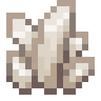
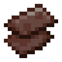
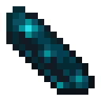

算力
训练模型就是在做乘法，而这些运算数得清。一次 flop 是一次乘法或一次加法。一个有 N 个参数的模型读 D 个词元，大约要 6ND 次：每个参数在每个词元上，前向两次，反向四次。核心一边算一边数，它的算力页把数到的结果摆在这个 6 旁边。
限制一次训练的，是每秒能做多少次运算、多大的内存能放下它，以及每次运算要花多少能量。这三样都取决于你造了什么。

制程
一个训练加速器就是一个设备。制造机用矩阵乘法光掩模制造它们，并按晶圆槽里晶圆的制程印制。制程每细一级，内存变成八倍，运算速度变成四倍，每次运算的能量减半。
| 制程 | 晶圆 | 每秒运算次数 | 内存 | 满载 FE/t | 每 FE 的运算次数 |
|---|---|---|---|---|---|
| 90 nm | 晶圆 | 10 G | 512 KiB | 80 | 6.25 M |
| 28 nm | 28 nm 晶圆 | 40 G | 4 MiB | 160 | 12.5 M |
| 7 nm | 7 nm 晶圆 | 160 G | 32 MiB | 320 | 25 M |
| 3 nm | 3 nm 晶圆 | 640 G | 256 MiB | 640 | 50 M |
 无序合成
无序合成


 无序合成
无序合成

 无序合成
无序合成


电力
贴着一个方块的前四个加速器靠那个方块匀出来的电运行，不耗电。其余每个设备都从它所在的电网取电：加速器和机架方块像电缆一样导电，所以一根电缆接到其中任何一个，就接到了全部。没有电可取的设备是暗的，什么也出不了。
用耗电设备的训练边算边付电费，价格取决于这些设备每单位能量能做多少运算。如果电网付不起，训练就等着，算力页会这样告诉你。其他用算力的方块（装配机、模型服务器、预测者 III）工作时按每个设备的满载功率付费，而且制程越细算得越多：28 nm 算四个，7 nm 算十六个，3 nm 算六十四个。
内存
训练一个参数要存四个数，每个四字节：权重、它的梯度和 Adam 的两个滑动平均。**每个参数 16 字节。**放不下的训练不会开始。核心自身有 2 MiB，能训练大约 131,000 个参数；单独的加速器把自己的内存加进来。这是计划中的参数状态预算。即使配方把数值舍入到更小的格式，训练仍以 fp32 数组存储这些状态，所以低精度不会缩小这项预算。临时激活与工作缓冲区还会占用额外的主机内存。
机架与机组
设备也可以放进机架模块的八个槽位，每个旁边有一条灯带显示它有多忙。最多四个模块叠在一台机架交换机下面，组成一个最多 32 个设备的机架。模块只上下相连：并排的机架互不相连。
用算力的方块贴着机架就能用上它，也可以沿互连线连过去。没有机组交换机的集群只能用一个机架，其余机架是暗的。用互连线把机组交换机接到各台机架交换机，就组成最多八个机架、256 个设备的机组。超过一个机组需要一座机房。
用手点一下交换机，它会告诉你集群的情况。
合成

 合成
合成


分摊工作
算力页旁边的按钮选择下一次训练怎样分摊工作。每种方式切分的东西不同，每个设备都有自己的线程，而每种方式走的都和单设备完全相同的步子。
页面把预留的设备、线程和内存标为计划，计时图描述最近完成的一步并行训练。低精度、文档边界掩码、z-loss 和第二预测头会使用通用图执行路径：数据并行和流水线并行跳过各自的副本或阶段，张量并行则保留矩阵工作线程。页面注明回退原因并清除并行计时；机架灯不显示这一步未经测量的负载。把配方改回去后，并行测量会恢复。资源分配与内存门槛保持不变，数到的运算仍按该分配的能效付费。分摊按钮选择的是下一次训练的资源分配。
- 单设备。 核心和单独的加速器共用内存和线程，每个运算的各行交给空闲的线程。机架闲着。模型要放得进这份共用内存。
- 数据并行。 每个设备都存整个模型，各拿批次的一份。各自算出梯度，再两两相加，新权重再发回去。它不增加内存：只有放得下整个模型的设备才能参与。经过链路的数据随模型变大。
- 张量并行。 每次矩阵乘法按结果的列切给各设备，每个设备只用自己那片权重，每次乘完大家碰头。模型可以比任何一个设备都大。每次乘法都要碰头，所以层小的时候，碰头的时间比干活还多。
- 流水线并行。 模型的层切成几段，一段一个设备，批次切成微批次，一个接一个沿各段往下走，再原路回来。每个设备只存自己那一段。段数不能超过模型里值得单独成段的层数，而流水线灌满和排空时各段要等：这就是气泡，各段工作量相同时约占时间的 (段数 - 1) / (微批次数 + 段数 - 1)。这一页会把它们画出来。
下面是一个四层、约 82 万个参数的模型在八个线程上，相对单线程的收益：
| 方式 | 加速 | 等待时间 | 每步经过链路 |
|---|---|---|---|
| 单设备 | ×2.8 | ||
| 数据并行 | ×5.7 | 6% | 46 MB |
| 张量并行 | ×1.6 | 62% | 100 MB |
| 流水线并行 | ×2.2 | 32% | 6 MB |
流水线并行用了八个设备中的四段，四段八个微批次在各段工作量相同时会等 27%。这些数字随模型而变：这一页显示的是你的。它还会告诉你，在不共享内存的设备之间，经过链路的数据走机架内、跨机组和跨机房的链路各要多久：每秒 100、25 和 6 GB。这就是每种方式在集群变大时要付的账单。
数字从哪里来
算力页区分资源分配计划与测量结果：运算次数是数出来的，设备的工作和等待是量出来的，字节是如果跨链路就要传的量。靠实际运行来练习的模型，每次查看都还要多跑一次前向，所以它每个参数每个词元的运算次数是那个六的好几倍。机房控制台说到的大到做不了的训练，是用同样的公式算出的预测，它也会这样注明。
两个机架模块，每个的槽位里有八个设备。
顶上的机架交换机把它们变成一个机架。它的正面显示集群正在运行什么。
机组交换机用互连线连接，让集群能用上不止一个机架。
 晶圆下界石英紫水晶碎片28 nm 晶圆钻石海晶砂粒7 nm 晶圆下界合金碎片回响碎片3 nm 晶圆
晶圆下界石英紫水晶碎片28 nm 晶圆钻石海晶砂粒7 nm 晶圆下界合金碎片回响碎片3 nm 晶圆
 张量机壳铜锭机架模块玻璃板红石粉互连线
张量机壳铜锭机架模块玻璃板红石粉互连线